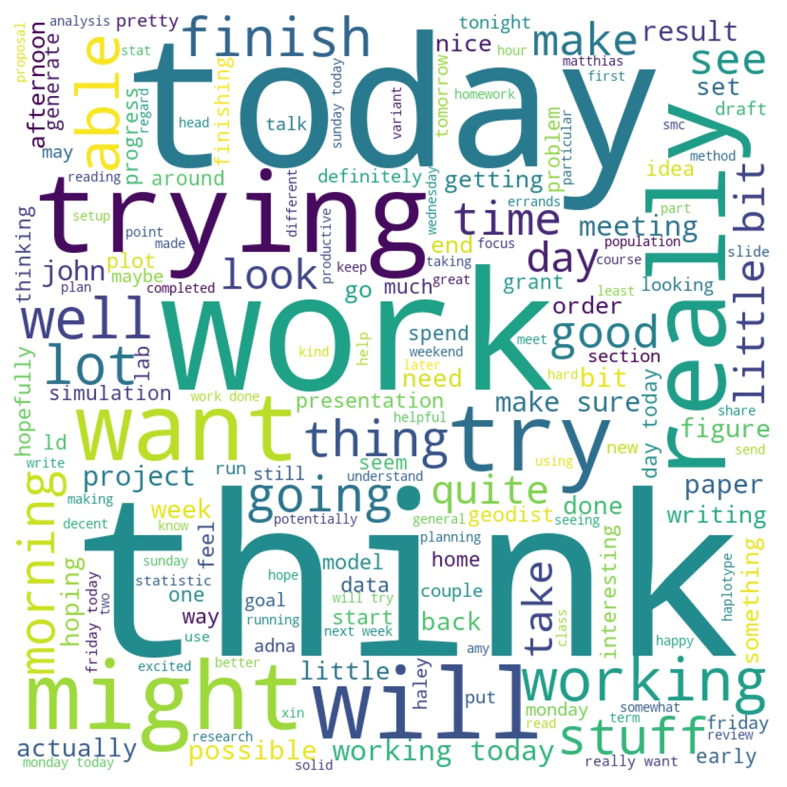

Useful Computational Tools¶
While 2020 was quite an eventful year for the entire world, I initially drafted this post in February with grand visions of having a productive year and finishing up my PhD. While the rest of the year was heavily derailed by the pandemic, I thought it might be nice to jot down some of the tools that have helped me to stay organized and somewhat focused during the ups and downs of the year.
Day Starter: jrnl¶
I typically take 5 minutes or so in the beginning of my days with my coffee/tea to jot down any ideas that might have come in my sleep or the two or three tasks that I would like to get done during the day. I have been using jrnl for the past couple of years and have found it quite a good way to build some daily planning and a kind of “check-in” before getting the day really started.
Your daily entries are also stored as text files so its very easy to read in and parse using your favorite computer programs.
{kind=link}
The above is a word cloud of my journal entries from 2015 - 2020 (the course of my PhD!). Seems reasonable that “trying”, “think”, and “today” were often in my thoughts in the morning!
Time Tracker: Forest¶
I’ve been very interested in the past year to think about little ways in which I can “hack” my workday to get a little more deep work where I am free from distractions. I’ve tried the pomodoro method in the past and found that the repetitive breaks were not as easy to plan my schedule around and that frequently I would work on a task much longer than the pomodoro interval.
I instead thought that over the course of this year I would try to take some notes and tips and try to use some ideas from the philosophy of “deep work” (see this article for more details on the concept). The key idea of deep work is that to produce high-quality work that one must spend time on the task that is fully uninterupted (no email, phone away, etc).
Forest is one of many applications that try to help you achieve deep work. I chose it because you can: (1) readily download the data for yourself as a CSV, (2) the UI is pretty sweet, and (3) you could spend the “points” you earned for each round of deep work to plant some trees. It seemed like a fun way to commit to an experiment for a year.
Making this a part of my routine also helped to show what times of the day I am most focused (mornings!) and where I can put tasks that require more effort and thought. I would definitely recommend trying it out for six months or so.
Todo-List : Dynalist¶
I used to have a smaller and more simple list for my day within a text file or an internally held wiki. However, I shifted midway through 2020 to using Dynalist primarily because it was a free option that had the “infinitely nesting list” structure that I really enjoyed. Most importantly, it can sync to your phone, which is awesome if you are in a seminar or eating lunch and think of an idea/errand that you want to tackle later.
Science Tools¶
Over the years I have gotten really into trying to make my science more reproduceable / shareable. This is partially to maintain my own sanity and make sure that I can be a better colleague to collaborators and more importantly do more logically consistent and repeatable science. Since much of my projects involve running code, I have focused on trying to improve my coding practices across my research projects. Here are some useful tools I found/developed for myself:
pre-commit¶
I’ve been trying to improve my code documentation and using some industry standards. A close colleague had mentioned that they were using the pre-commit library in python to keep their code in line with standardized docstrings and linting checks on each commit. Some of the popular ones are really useful like pydocstyle and flake8. For high-level style guides in python, this has proved pretty invaluable to forcing me to document and format my code more consistently.
project_starter¶
I’ve often had an alias to get started with particular projects that create a directory structure that is standard boilerplate. Early in graduate school it was using a custom function in bash.
However, that function does not include support and templating for jupyter-notebooks, which have become a key way that I like to plot data and share it. So I created a repository that consists of a skeleton for the directory structure. I typically use the following command to clone the repo and create a project directory:
# Setup a project directory (and remove the git hooks)
setupproject(){
url='git@github.com:aabiddanda/project_template.git'
git clone -q ${url} $1
rm -rf ./$1/.git/
}
This will setup a project directory that has a Makefile that lets you build a project website too from the collection of jupyter notebooks. I’ve found this to be a pretty nice way to distribute results to colleages (even if the repository / code itself is private!).
plot_libs¶
I’ve had to develop lots of various plots over the years of my PhD. I have to admit that almost every final plot that I have generated takes > 50 lines of code (after all of the data formatting!). It is sometimes really nice to be able to quickly have a set of commands to generate plots. I’ve found myself using the matplotlib system of axes and building some custom plotting functions on top of that. I’ve also been trying to experiment a bit more with the stylesheets to have very quickly interchangeable ways to plot data for presentations and papers. This library is more of a work in progress, but its a good idea to have some storage for some of those more pesky visualizations.